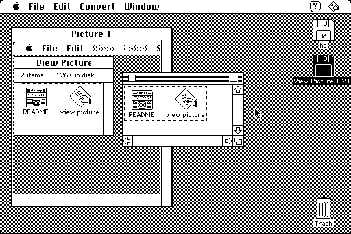

Download
viewpicture120.zip (57K) View Picture 1.2.0 repackaged into a zipped hfs disk image and checksum file. The disk image can be mounted with Mini vMac.
viewpicture120.sit.hqx (74K) View Picture 1.2.0 in the original format.
copyright: Geoffrey Keating
mod date: Apr 16, 1996
license: Freeware
official url
A utility for viewing and cropping pictures. "It is scriptable and recordable, and supports drag-and-drop (if available) and balloon help. It requires system 7.0 or higher."

If you find these downloads useful, please consider helping the Gryphel Project, which hosts them.
Here are the md5 checksums for the downloads, signed with Gryphel Key 5:
--------- GRY SIGNED TEXT --------- 547183252d22173db3e5b75d22aaba92 viewpicture120.zip b21f1c8735aa6fc77687bd78dbece2b8 viewpicture120.sit.hqx ------- BEGIN GRY SIGNATURE ------- Gry/4Xa8CFcUzxdN/JCJpRFsbreP4cftir/B2zf4OBzv7nPEVTHIZmt8SjTsd2zz TWjNBuSJNfAti6brz4hLVLJ10pZOgodHzQ4HE7mI7304+1dznve67sGd6A09m1J6 dorfkvmZ0uNrAoUO/UnTnFWbor6TFsGVbKxnBz782eBekzaRp6We8YM2YP2gAqHy -------- END GRY SIGNATURE --------